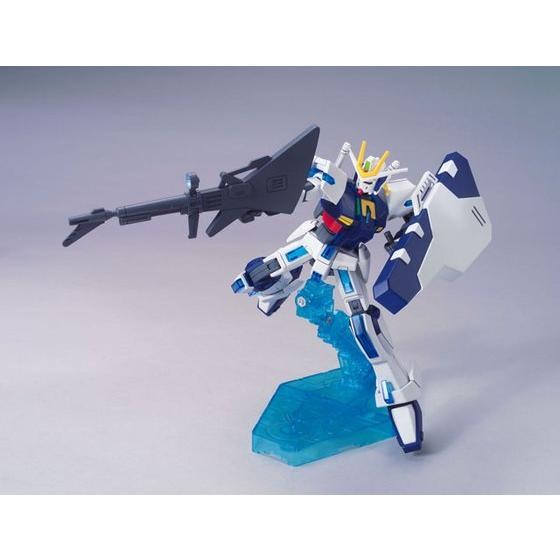
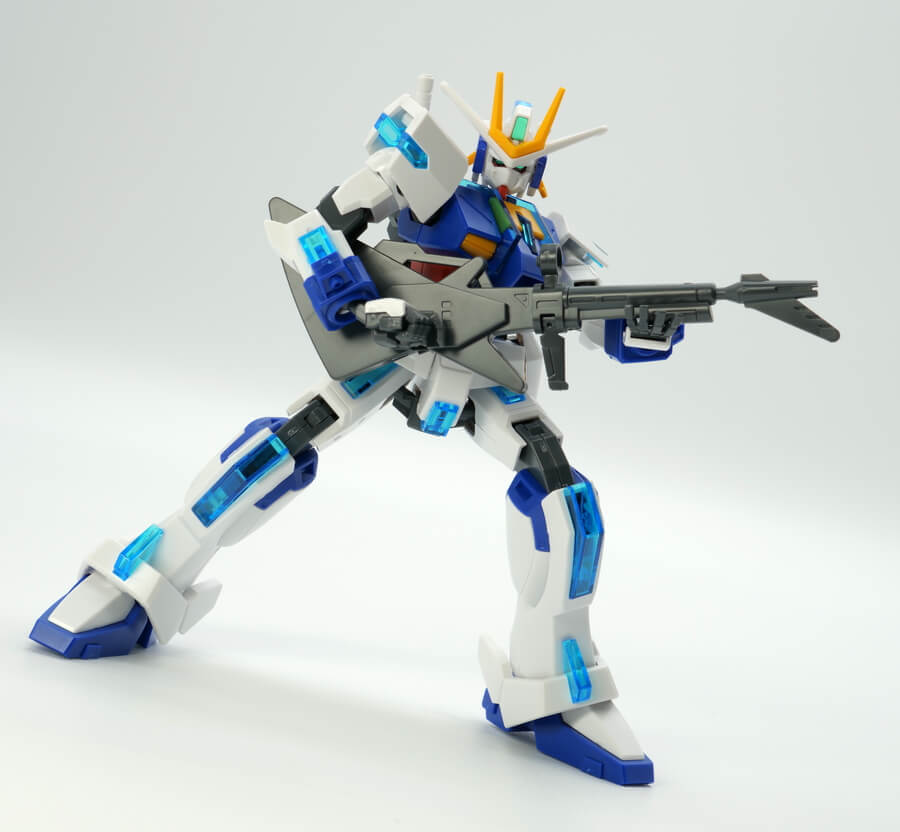

- Sơ lược
- Trang bị
- Beam Saber
- Extreme Rifle
- Shield
- Armor Pack
- Extreme Gundam Tachyon Phase
- Extreme Gundam Carnage Phase
- Extreme Gundam Ignis Phase
- Extreme Gundam Mystic Phase
- Extreme Gundam Type Leos
- Extreme Gundam R
- Cốt truyện
Extreme Gundam (còn được gọi là Extreme Gundam Type ex-) là Prototype Multi-Mode mobile suit trong game Mobile Suit Gundam: Extreme Vs. Là một MS không có phi công, chứa 1 lõi tên là "EX-". Extreme Gundam đóng vai trò là trùm cuối trong các Game liên quan và là MS nguyên bản được thiết kế bởi Kunio Okawara.
Extreme Gundam được thiết kế để lưu trữ vũ khí trong nhiều gói Several Armor để phù hợp với mọi tình huống chiến đấu. Vũ khí tiêu chuẩn của đơn vị bao gồm: 2 thanh Beam Saber và một khẩu Extreme Rifle, vũ khí tầm xa chính có thể được lưu trữ trong khiên.
Extreme Gundam có 4 Armor Pack tiêu chuẩn, được trang bị và nâng cấp vũ khí của riêng nó tùy thuộc vào tình huống chiến đấu. Tachyon Phase Armor Pack, cung cấp cho Extreme Gundam lớp giáp dày và các đòn tấn công cận chiến mạnh mẽ thông qua việc sử dụng một thanh kiếm khổng lồ được cất ở sau lưng và có khả năng bắn ra những quả cầu điện khổng lồ. Carnage Phase Armor Pack, cung cấp cho đơn vị khả năng tấn công tầm xa thông qua hai khẩu pháo lớn gắn trên vai. Ignith Phase Armor Pack, giúp MS có khả năng tấn công 360 độ bằng các Funnel. Mystic Phase Armor Pack, là bản nâng cấp bốn chân đa năng.
Head Unit rất thú vị vì nó chứa các hình dạng đầu khác nhau cho mỗi Armor Pack. Ignis Phase sử dụng mặt sau của đầu làm khuôn mặt, mang lại cho nó vẻ ngoài hơi nữ tính. Carnage Phase sử dụng cùng một khuôn mặt với Extreme Gundam mà không có bất kỳ thay đổi nào và Tachyon Phase, mặt nạ của phần đầu sẽ được mở ra.
Trong game Gundam EXA, Extreme Gundam có thể tự xuất hiện trong thế giới ảo của General Answer và cho phép EX lặn vào thế giới đó mà không cần đánh cắp MS. Nó cũng có sức mạnh phi thường, với khả năng tiêu diệt các Gundam của Operation Meteor như XXXG-01SR Gundam Sandrock và XXXG-01S Shenlong Gundam một cách dễ dàng.
Vũ khí cận chiến tiêu chuẩn, có khả năng cắt đôi một MS. Extrme Gundam thường gắn ở sau lưng.
Có thiết kế độc đáo không giống như các mobile suit khác, có thể chịu được nhiều phát bắn và có thể điều chỉnh công suất đầu ra khi cần thiết.
Khiên tiêu chuẩn được sử dụng để tự vệ, có thể chịu được một phát bắn trực tiếp từ Buster Rifle của XXXG-01W Wing Gundam mà không bị hư hại. Với vẻ ngoài như một hộp đựng đàn guitar, nó có khả năng lưu trữ Extreme Rifle bên trong.
Một bộ giáp cận chiến có khả năng tạo ra các quả cầu điện bằng cách tách rời cẳng tay. Được cho là có khả năng phòng thủ cao.
Một bộ giáp pháo binh tầm xa có khả năng sử dụng pháo hố đen.
Một bộ giáp mang lại cho Extreme Gundam vẻ ngoài hơi nữ tính và một loạt các Funnel có khả năng thực hiện mọi đòn tấn công tầm xa cũng như tạo ra một trận bão tuyết hình cầu.
Không giống như ba Phase trước, đây là sự hợp nhất giữa Extreme Gundam và Mist Pegasus từ Correct Century, mang lại cho đơn vị cơ thể của một nhân mã có cánh, xuất sắc ở mọi phạm vi với một cây thương có thể biến hình, phóng ra nhiều tia sáng, lốc xoáy và Funnels giống như lông vũ từ đôi cánh của nó. Nó cũng có một đòn tấn công giống Moonlight Butterfly mà nó thực hiện bằng đôi cánh của mình.
Một biến thể chị em, màu đỏ được phát triển cho Leos Alloy. Không giống như đơn vị anh em của nó, nó sử dụng các gói vũ khí truyền thống hơn dựa trên các Gundam khác thay vì các Massive Armor Pack và tiến hóa cùng với phi công của nó.
Một biến thể có nhiều bộ phận phát sáng màu xanh lam dịu hơn. Nó được điều khiển bởi một số phiên bản của Dark Sthesia và có các Armor Pack khác nhau.
Hai chiếc Extreme Gundam được chế tạo bởi một nguồn gốc không rõ và được thiết kế để du hành vũ trụ. Một trong số chúng là một bộ đồ di động không có phi công, với lõi là AI tên "EX-". Lý do đằng sau một phi công AI là vì sự thiếu hụt rõ ràng của các ứng cử viên là con người.
Một đơn vị khác, được sơn màu Đỏ, được Leos Alloy điều khiển để truy đuổi phi công AI EX-. EX-, tên của nó ám chỉ đến sự tuyệt vọng tột độ, vì nó đại diện cho giới hạn của sự tiến hóa và là bằng chứng cho thấy không còn hy vọng nào cho nhân loại trong dòng thời gian của Gundam EXA. Đơn vị này đã bị phá hủy sau trận chiến cuối cùng giữa đơn vị sau và Extreme Gundam Type Leos.
